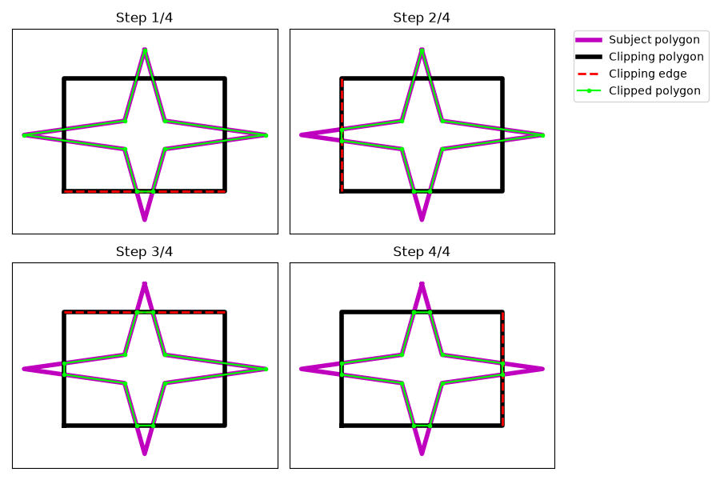

Note
Go to the end to download the full example code.
Sutherland-Hodgeman Clipping Algorithm#

from itertools import cycle
import matplotlib.pyplot as plt
import numpy as np
import pyvista as pv
import taichi as ti
from matplotlib.patches import Polygon
from taichi.lang.impl import get_runtime
def plot_poly(edges: np.ndarray, **kwargs) -> None:
"""Draw a closed polygon from an ordered array of vertices."""
edges = np.array(edges)
t = np.array(list(edge_iterator(edges)))
edges = np.vstack((t[:, 0, :], t[0, 0, :]))
plt.gca().add_patch(Polygon(edges, facecolor='None'))
plt.plot(edges[:, 0], edges[:, 1], **kwargs)
def edge_iterator(edges: np.ndarray) -> np.ndarray:
"""Yield consecutive vertex pairs, including the closing edge."""
c = cycle(edges)
current = None
for i in range(edges.shape[0]):
if i == 0:
old = next(c)
else:
old = current
current = next(c)
yield old, current
if get_runtime().prog is None:
ti.init(
arch=ti.cpu,
cfg_optimization=False,
opt_level=1,
fast_math=False,
advanced_optimization=False,
)
NMAXV = 16 # Maximum vertices per polygon
ti.f32 = ti.f32
PC2TYPE = ti.types.matrix(n=NMAXV, m=2, dtype=ti.f32)
PC3TYPE = ti.types.matrix(n=NMAXV, m=3, dtype=ti.f32)
P2STRUCT = ti.types.struct(polygon=PC2TYPE, k=ti.i32)
P3STRUCT = ti.types.struct(polygon=PC3TYPE, k=ti.i32)
POINT2TYPE = ti.types.vector(n=2, dtype=ti.f32)
POINT3TYPE = ti.types.vector(n=3, dtype=ti.f32)
FINFOTYPE = ti.types.struct(
vi=P3STRUCT,
fn=POINT3TYPE,
fc=POINT3TYPE,
a=ti.f32,
vis=ti.u1,
d=ti.f32,
vip=P2STRUCT,
)
FINFOFIELD = None
SMTYPE = None
rv = ti.types.vector(n=3, dtype=ti.f32)([0.2, 1.0, 0.2]).normalized()
def _poly_area_r3(verts: np.ndarray) -> float:
"""Return the area of a planar polygon in three dimensions."""
a = 0.0
if verts.shape[0] > 2:
for i in range(verts.shape[0] - 2):
e1 = verts[i + 1, :] - verts[0, :]
e2 = verts[i + 2, :] - verts[0, :]
a += 0.5 * np.linalg.norm(np.cross(e1, e2))
return a
def load_finfo(obj_path) -> None:
"""Load mesh polygons into the Taichi fields used by the clipping routines."""
global FINFOFIELD, SMTYPE
obj = pv.get_reader(obj_path).read().clean()
f = []
i = 0
while True:
f.append(obj.faces[i + 1 : i + 1 + obj.faces[i]])
i += obj.faces[i] + 1
if i == obj.faces.size:
break
if i > obj.faces.size:
raise RuntimeError()
FINFOFIELD = FINFOTYPE.field(shape=len(f), layout=ti.Layout.AOS)
SMTYPE = ti.types.matrix(len(f), len(f), dtype=ti.u1)
for i, fi in enumerate(f):
vi = np.array(obj.points[fi]).astype(np.float32)
fn = np.cross(vi[1, :] - vi[0, :], vi[2, :] - vi[0, :])
fn /= np.linalg.norm(fn)
fc = np.mean(vi, axis=0)
num_verts = vi.shape[0]
poly = PC3TYPE(0.0)
poly[:num_verts, :] = vi
FINFOFIELD[i].vi = P3STRUCT(polygon=poly, k=num_verts)
FINFOFIELD[i].fn = POINT3TYPE(*fn.astype(np.float32))
FINFOFIELD[i].fc = POINT3TYPE(*fc.astype(np.float32))
FINFOFIELD[i].a = _poly_area_r3(vi)
return SMTYPE, FINFOFIELD
def gen_cache(naz: int, nel: int) -> ti.field:
"""Build the self-shadowing cache over an azimuth/elevation grid."""
cache = SMTYPE.field(shape=(naz, nel))
@ti.kernel
def gen_cache() -> int:
"""Fill the shadow cache from the loaded face information."""
ti.loop_config(serialize=True)
for i, j in ti.ndrange(naz, nel):
az = i / naz * ti.math.pi * 2
el = j / (nel - 1) * ti.math.pi - ti.math.pi / 2
v = sph_to_cart(az, el)
sm = compute_overlaps(v)
cache[i, j] = sm
return 0
gen_cache()
return cache
@ti.func
def sph_to_cart(az: ti.f32, el: ti.f32) -> ti.math.vec3:
"""Convert azimuth/elevation angles to a unit Cartesian vector."""
cos_theta = ti.cos(el)
x = cos_theta * ti.cos(az)
y = cos_theta * ti.sin(az)
z = ti.sin(el)
return ti.math.vec3(x, y, z)
@ti.func
def poly_on_poly_ti(t1: P3STRUCT, t3: P3STRUCT, v: ti.math.vec3) -> P2STRUCT:
"""Project two polygons onto a view plane and return their overlap."""
t3n = ti.math.cross(
t3.polygon[1, :] - t3.polygon[0, :], t3.polygon[2, :] - t3.polygon[0, :]
).normalized()
t1p = P3STRUCT()
t1p.k = t1.k
for i in range(t1.k):
t1p.polygon[i, :] = proj_to_plane_along_dir(
t1.polygon[i, :], v, t3.polygon[0, :], t3n
)
e1 = (t3.polygon[1, :] - t3.polygon[0, :]).normalized()
e2 = ti.math.cross(t3n, e1)
m = ti.Matrix.rows([e1, e2, t3n])
t1p2_poly = t1p.polygon @ m.transpose()
t3p2_poly = t3.polygon @ m.transpose()
t1p2 = P2STRUCT(polygon=t1p2_poly[:, :2], k=t1.k)
t3p2 = P2STRUCT(polygon=t3p2_poly[:, :2], k=t3.k)
clip = clip_ti(t1p2, t3p2)
return clip
@ti.func
def proj_to_plane_along_dir(
v0: ti.math.vec3, vd: ti.math.vec3, pv: ti.math.vec3, pn: ti.math.vec3
) -> ti.math.vec3:
"""Project a point onto a plane along a specified direction."""
pd = ti.math.dot(pv, pn)
d2p = ti.math.dot(v0, pn) - pd
dfac = ti.math.dot(vd, pn)
return v0 - vd * (d2p / dfac)
@ti.func
def compute_overlaps(v: ti.math.vec3):
"""Compute the pairwise self-shadowing matrix for view direction ``v``."""
e1 = ti.math.cross(v, rv).normalized()
e2 = ti.math.cross(v, e1)
ti.loop_config(serialize=True)
for i in range(FINFOFIELD.shape[0]):
FINFOFIELD[i].vip.polygon = ti.zero(FINFOFIELD[i].vip.polygon)
fi = FINFOFIELD[i]
FINFOFIELD[i].vis = ti.math.dot(fi.fn, v) > 0
FINFOFIELD[i].d = ti.math.dot(v - fi.fc, v)
ti.loop_config(serialize=True)
for j in range(NMAXV):
if j == fi.vi.k:
FINFOFIELD[i].vip.k = fi.vi.k
break
pp = fi.vi.polygon[j, :]
vi_plane = pp - ti.math.dot(pp, v) * v
vip1 = ti.math.dot(vi_plane, e1)
vip2 = ti.math.dot(vi_plane, e2)
FINFOFIELD[i].vip.polygon[j, :] = ti.math.vec2(vip1, vip2)
sm = SMTYPE(False)
ti.loop_config(serialize=True)
for i, j in ti.ndrange(FINFOFIELD.shape[0], FINFOFIELD.shape[0]):
fi, fj = FINFOFIELD[i], FINFOFIELD[j]
if i != j and fi.vis and fj.vis and fi.d < fj.d:
clp_area = intersection_area_ti(fj.vip, fi.vip)
if clp_area > 1e-7:
sm[i, j] = True
return sm
@ti.func
def all_areas_ti(p1: P2STRUCT, p2: P2STRUCT) -> tuple:
"""Return polygon and intersection areas for two clipped polygons."""
a1 = poly_area_ti(p1)
a2 = poly_area_ti(p2)
ai = intersection_area_ti(p1, p2)
au = a1 + a2 - ai # area of the union between 1 and 2
a1n2 = a1 - ai # area of 1 not including 2
a2n1 = a2 - ai # area of 2 not including 1
axor = au - ai # area of 1 and 2 not including the intersection
return a1, a2, ai, au, a1n2, a2n1, axor
@ti.func
def tri_area(v1: ti.math.vec2, v2: ti.math.vec2, v3: ti.math.vec2) -> float:
"""Return the signed area of a triangle in two dimensions."""
return 0.5 * ti.abs(
v1[0] * (v2[1] - v3[1]) + v2[0] * (v3[1] - v1[1]) + v3[0] * (v1[1] - v2[1])
)
@ti.func
def poly_area_ti(p: P2STRUCT) -> ti.f32:
"""Return the area of a polygon by summing triangles from its first vertex."""
a = 0.0
if p.k > 2:
ti.loop_config(serialize=True)
for i in range(p.k - 2):
a += tri_area(p.polygon[0, :], p.polygon[i + 1, :], p.polygon[i + 2, :])
return a
@ti.func
def intersection_area_ti(p1: P2STRUCT, p2: P2STRUCT) -> ti.f32:
"""Return the area of the intersection of two convex polygons."""
clp = clip_ti(p1, p2)
return poly_area_ti(clp)
@ti.func
def is_tri_ccw(v1: ti.math.vec2, v2: ti.math.vec2, v3: ti.math.vec2) -> bool:
"""Return whether three 2D points are ordered counter-clockwise."""
return (
v1[0] * (v2[1] - v3[1]) + v2[0] * (v3[1] - v1[1]) + v3[0] * (v1[1] - v2[1])
) > 0
@ti.func
def is_inside(p1: ti.math.vec2, p2: ti.math.vec2, q: ti.math.vec2) -> ti.u1:
"""Return whether point ``q`` lies on the inside side of an edge."""
R = (p2[0] - p1[0]) * (q[1] - p1[1]) - (p2[1] - p1[1]) * (q[0] - p1[0])
return R <= -1e-4
@ti.func
def compute_intersection(
p1: ti.math.vec2, p2: ti.math.vec2, p3: ti.math.vec2, p4: ti.math.vec2
) -> ti.math.vec2:
"""Return the intersection point of two lines defined by point pairs."""
v = POINT2TYPE(0.0)
# if first line is vertical
if p2[0] - p1[0] == 0:
# slope and intercept of second line
m2 = (p4[1] - p3[1]) / (p4[0] - p3[0])
b2 = p3[1] - m2 * p3[0]
v.x = p1[0]
# y-coordinate of intersection
v.y = m2 * v.x + b2
# if second line is vertical
elif p4[0] - p3[0] == 0:
# slope and intercept of first line
m1 = (p2[1] - p1[1]) / (p2[0] - p1[0])
b1 = p1[1] - m1 * p1[0]
v.x = p3[0]
# y-coordinate of intersection
v.y = m1 * v.x + b1
# if neither line is vertical
else:
m1 = (p2[1] - p1[1]) / (p2[0] - p1[0])
b1 = p1[1] - m1 * p1[0]
# slope and intercept of second line
m2 = (p4[1] - p3[1]) / (p4[0] - p3[0])
b2 = p3[1] - m2 * p3[0]
# x-coordinate of intersection
v.x = (b2 - b1) / (m1 - m2)
# y-coordinate of intersection
v.y = m1 * v.x + b1
return v
@ti.kernel
def clip_many_ti(sp: P2STRUCT, cp: P2STRUCT) -> P2STRUCT:
"""Benchmark the clipping kernel by repeating it many times."""
res = P2STRUCT()
n = int(1e6)
for _i in range(n):
res = clip_ti(sp, cp)
return res
@ti.kernel
def clip_one(sp: P2STRUCT, cp: P2STRUCT, side: int) -> P2STRUCT:
"""Clip a subject polygon against one edge of a clipping polygon."""
return clip_ti(sp, cp, side)
@ti.func
def clip_ti(sp: ti.template(), cp: ti.template(), side: int) -> ti.template():
"""Clip a subject polygon against a convex clipping polygon."""
k = sp.k
n_clip_edges = cp.k
subject_polygon = PC2TYPE(0.0)
for i in range(k):
subject_polygon[i, :] = sp.polygon[i, :].cast(ti.f32)
cp_ccw = is_tri_ccw(cp.polygon[0, :], cp.polygon[1, :], cp.polygon[2, :])
clipping_polygon = PC2TYPE(0.0)
for i in range(n_clip_edges):
if not cp_ccw:
clipping_polygon[i, :] = cp.polygon[i, :].cast(ti.f32)
else:
clipping_polygon[n_clip_edges - i - 1, :] = cp.polygon[i, :].cast(ti.f32)
final_polygon = PC2TYPE(0.0)
next_polygon = subject_polygon
i = side
oldk = k
k = 0
pi = i - 1
if i == 0:
pi = n_clip_edges - 1
c_edge_start = clipping_polygon[pi, :]
c_edge_end = clipping_polygon[i, :]
ti.loop_config(serialize=True)
for j in range(oldk):
pj = j - 1
if j == 0:
pj = oldk - 1
s_edge_start = next_polygon[pj, :]
s_edge_end = next_polygon[j, :]
if is_inside(c_edge_start, c_edge_end, s_edge_end):
if not is_inside(c_edge_start, c_edge_end, s_edge_start):
final_polygon[k, :] = compute_intersection(
s_edge_start, s_edge_end, c_edge_start, c_edge_end
)
k += 1
final_polygon[k, :] = s_edge_end
k += 1
elif is_inside(c_edge_start, c_edge_end, s_edge_start):
final_polygon[k, :] = compute_intersection(
s_edge_start, s_edge_end, c_edge_start, c_edge_end
)
k += 1
return P2STRUCT(polygon=final_polygon, k=k)
if __name__ == '__main__':
subject_polygon = ti.Matrix(
np.array(
[
(0, 3),
(0.5, 0.5),
(3, 0),
(0.5, -0.5),
(0, -3),
(-0.5, -0.5),
(-3, 0),
(-0.5, 0.5),
]
)
)
clipping_polygon = ti.Matrix(np.array([(-2, -2), (-2, 2), (2, 2), (2, -2)]))
spfull = PC2TYPE(0.0)
spfull[: subject_polygon.n, :] = subject_polygon
sp = P2STRUCT(polygon=spfull, k=subject_polygon.n)
cpfull = PC2TYPE(0.0)
cpfull[: clipping_polygon.n, :] = clipping_polygon
cp = P2STRUCT(polygon=cpfull, k=clipping_polygon.n)
plt.figure(figsize=(9, 6))
for i in range(4):
plt.subplot(2, 2, i + 1)
sp = clip_one(sp, cp, i)
clipped_polygon = sp['polygon'][: sp['k'], :]
plot_poly(subject_polygon, c='m', linewidth=4, label='Subject polygon')
plot_poly(clipping_polygon, c='k', linewidth=4, label='Clipping polygon')
plt.plot(
*np.array((clipping_polygon[i, :], clipping_polygon[(i - 1) % 4, :])).T,
'r--',
linewidth=2,
label='Clipping edge',
)
plot_poly(
clipped_polygon,
c='lime',
marker='.',
linewidth=1.6,
label='Clipped polygon',
)
plt.gca().get_xaxis().set_visible(False)
plt.gca().get_yaxis().set_visible(False)
plt.title(f'Step {i + 1}/4')
plt.ylim(-3.5, 3.75)
plt.subplot(2, 2, 2)
plt.legend(bbox_to_anchor=(1.05, 1.02))
plt.tight_layout()
plt.show()
Total running time of the script: (0 minutes 1.433 seconds)